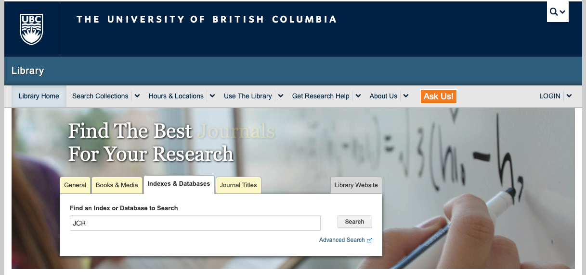
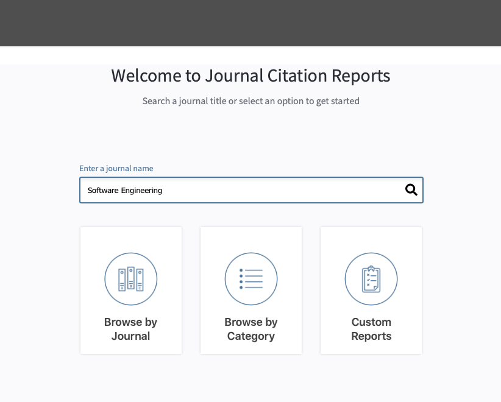

A literature review provides an overview of sources you explored while researching a particular topic.
It is used to ensure completeness in your understanding of your research area and to demonstrate to your audience how your research fits within a larger field of study. The high-level purpose and structure of literature reviews is described here.
There are several methods to collect literature:
- Look for existing surveys on the topic of your research
- Identify key papers on the topic (GoogleScholor search) and perform backward and forward snowballing – check all papers they reference and all papers that reference them.
When selecting papers, note:
- Top conferences and journals in our area are:
- SE: ICSE, FSE, ASE, ISSTA, TSE, TOSEM, Journal of Empirical Software Engineering
- SE Topical Conferences: ICST, ICSME, ICPC, SANER, …
- Security: CCS, S&P, Usenix Security
- ML: NeurIPS, ICML,…
- ML Topical: FAT*, FAT-ML
- There are others... talk to Prof. Rubin about your specific search.
- CORE Ranking for Conferences (Pick A* or A) is
here
- CORE Ranking for Journals (Pick A* or A) is
here
- Google Scholar ranking of Software and Systems Area is
here
- Journals ranking based on Journal Citation Report (JCR) can be found via UBC library website.
- Go to https://www.library.ubc.ca and search for JCR

- Click on Journal Citation Reports link
- Search by a keyword or use advanced search methods (i.e., Browse by Journal, Category, and Custom Reports).

- Where to search?
- Main Digital Libraries
- Main Search Engines and Unified Repositories
Important: define the right set of keywords for your search (and debug).
Make sure you define keywords in the right format for your search engine,
as they take different query formats as inputs.
- Systematic Literature Review: check out some online guides, e.g.,
Have fun!